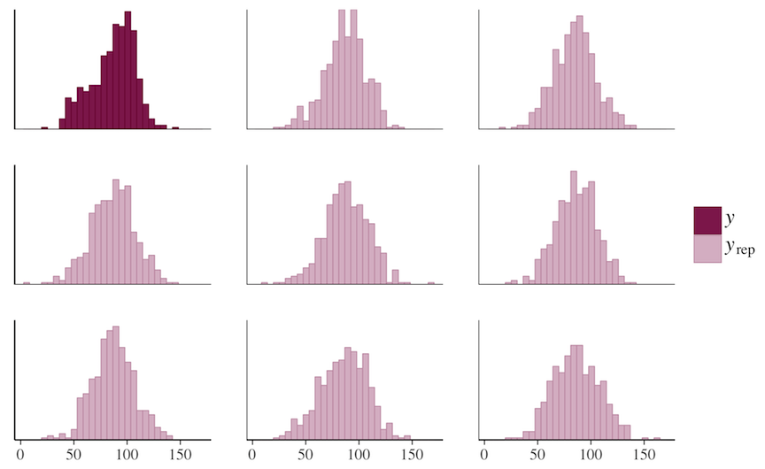
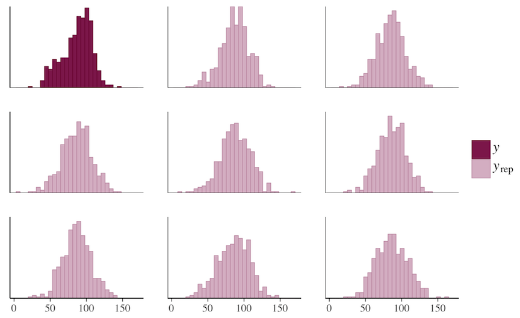
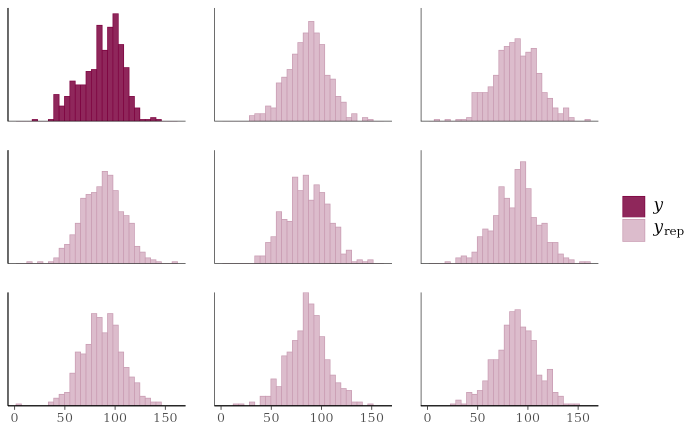
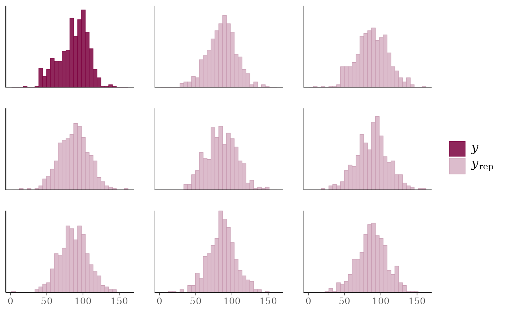

Stan Development Team
The bayesplot package provides a variety of ggplot2-based plotting functions for use after fitting Bayesian models (typically, though not exclusively, via Markov chain Monte Carlo). The package is designed not only to provide convenient functionality for users, but also a common set of functions that can be easily used by developers working on a variety of packages for Bayesian modeling, particularly (but not necessarily) packages powered by RStan (the R interface to Stan). Examples of packages that will soon (or already are) using bayesplot are rstan itself, as well as the rstan-dependent rstanarm and brms packages for applied regression modeling.
Plotting functionality
 

The plotting functions in bayesplot are organized into several modules:
MCMC: Visualizations of Markov chain Monte Carlo (MCMC) simulations generated by any MCMC algorithm as well as diagnostics. There are also additional functions specifically for use with models fit using the No-U-Turn Sampler (NUTS).
PPC: Graphical (posterior or prior) predictive checks (PPCs).
PPD: Plots of (posterior or prior) predictive distributions without comparisons to observed data.
Resources
Online documentation and vignettes: Visit the bayesplot website at https://mc-stan.org/bayesplot/
Bug reports and feature requests: If you would like to request a new feature or if you have noticed a bug that needs to be fixed please let us know at the bayesplot issue tracker at https://github.com/stan-dev/bayesplot/issues/
General questions and help: To ask a question about bayesplot on the Stan Forums forum please visit https://discourse.mc-stan.org.
References
Gabry, J. , Simpson, D. , Vehtari, A. , Betancourt, M. and Gelman, A. (2019), Visualization in Bayesian workflow. J. R. Stat. Soc. A, 182: 389-402. doi:10.1111/rssa.12378. (journal version, arXiv preprint, code on GitHub)
See also
theme_default() for the default ggplot theme used by
bayesplot and bayesplot_theme_set() to change it.
bayesplot-colors to set or view the color scheme used for plotting.
ggplot2::ggsave() for saving plots.
Author
Maintainer: Jonah Gabry jsg2201@columbia.edu
Authors:
Tristan Mahr (ORCID)
Other contributors:
Paul-Christian Bürkner [contributor]
Martin Modrák [contributor]
Malcolm Barrett [contributor]
Frank Weber [contributor]
Eduardo Coronado Sroka [contributor]
Teemu Sailynoja [contributor]
Aki Vehtari [contributor]
Behram Ulukır [contributor]
Examples
# A few quick examples (all of the functions have many examples
# on their individual help pages)
# MCMC plots
x <- example_mcmc_draws(params = 5)
mcmc_intervals(x, prob = 0.5)
mcmc_intervals(x, regex_pars = "beta")
color_scheme_set("purple")
mcmc_areas(x, regex_pars = "beta", prob = 0.8)
color_scheme_set("mix-blue-red")
mcmc_trace(x, pars = c("alpha", "sigma"),
facet_args = list(nrow = 2))
color_scheme_set("brightblue")
mcmc_scatter(x, pars = c("beta[1]", "sigma"),
transformations = list(sigma = "log"))
# Graphical PPCs
y <- example_y_data()
yrep <- example_yrep_draws()
ppc_dens_overlay(y, yrep[1:50, ])
 # \donttest{
color_scheme_set("pink")
ppc_stat(y, yrep, stat = "median") + grid_lines()
#> `stat_bin()` using `bins = 30`. Pick better value `binwidth`.
ppc_hist(y, yrep[1:8, ])
#> `stat_bin()` using `bins = 30`. Pick better value `binwidth`.

# Same plots but without y (using ppd_ instead of ppc_)
bayesplot_theme_set(ggplot2::theme_gray())
ypred <- yrep
ppd_dens_overlay(ypred[1:50, ])
ppd_stat(ypred, stat = "median") + grid_lines()
#> `stat_bin()` using `bins = 30`. Pick better value `binwidth`.
ppd_hist(ypred[1:8, ])
#> `stat_bin()` using `bins = 30`. Pick better value `binwidth`.
# }
# \donttest{
color_scheme_set("pink")
ppc_stat(y, yrep, stat = "median") + grid_lines()
#> `stat_bin()` using `bins = 30`. Pick better value `binwidth`.
ppc_hist(y, yrep[1:8, ])
#> `stat_bin()` using `bins = 30`. Pick better value `binwidth`.

# Same plots but without y (using ppd_ instead of ppc_)
bayesplot_theme_set(ggplot2::theme_gray())
ypred <- yrep
ppd_dens_overlay(ypred[1:50, ])
ppd_stat(ypred, stat = "median") + grid_lines()
#> `stat_bin()` using `bins = 30`. Pick better value `binwidth`.
ppd_hist(ypred[1:8, ])
#> `stat_bin()` using `bins = 30`. Pick better value `binwidth`.
# }